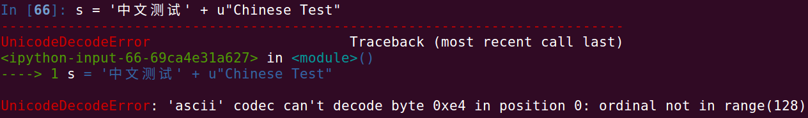

1 | #!/usr/bin/python |
1 | a = [1,2,3,4] |
1 | # 这种写法优于 % |
Pythonic 风格的代码库FlaskgeventrequestsPython 的三元形式1 | X if C else Y |
Python 的 switch1 | if n == 0 |
Python 的 Lazy evaluation1 | def fib(): |
1 | def enum(*posarg, **keysarg): |
type按照 Python 理念，为了充分利用其动态性的特征是不推荐进行类型检查的。 不刻意进行类型检查，而是在出错的情况下通过抛出异常来进行处理，这是较为常见的方式。实际应用中如果为了提高应用程序的健壮性，会使用 type() 来检查类型。
1 | if type(a) is types.ListType: |
1 | li = ['a', 'b', 'c', 'd', 'e'] |
1 | # enumerate 返回的是一个迭代器 |
自己实现反序 enumerate:
1 | def myenumerate(sequence): |
1 | personinfo = { |
is 和 ==is 用来比较两个对象在内存中是否拥有同一块内存地址,相当于 id(x) == id(y) 操作== 表示 equal，是用来检查两个对象的值是否相等，实际上调用 a.__eq__(b)Unicode1 | strUnicode = u"unicode 字符串" |
Unicode 编码分为编码方式和实现方式两个层次。编码方式分为 UCS-2 (两个字节编码) 和 UCS-4 (四个字节编码)，目前使用的是 UCS-2，占用 16 位的编码空间。Unicode 的实现方式称为 Unicode 转换格式 (Unicode Transformation Format)，简称为 UTF，较为常见的是 UTF-8，其特点是对不同范围的字符使用不同长度的编码。
decode() 将其他编码对应的字符解码为 Unicodeencode() 将 Unicode 编码转换为另一种编码, Unicode 作为转换过程中的中间编码1 | fileHandle = open("test.txt", r) |

左边是中文字符串，类型为 str，右边为 Unicode 字符串。当两种类型的字符串连接的时候，Python 将左边的中文字符转为 Unicode 再与右边的 Unicode 字符串做连接。而将 str 转为 Unicode 使用系统默认的 ASCII 编码对字符串进行解码，中 字的编码 \xd6 对应的值为 216，超出了 ASCII 的编码范围 0 ~ 127， 因此会抛出 UnicodeDecodeError 异常。
使用如下两种方式将编码统一就可以解决问题:
1 | In [80]: s = "中文测试".decode('utf-8') + u"Chinese Test" |
默认编码:
1 | In [68]: import sys |
Python 无自增1 | # 会被解释为 +(+i), + 被解释为正号 |
1 | # |